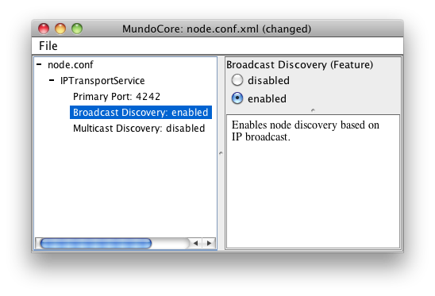

Getting Started
Prerequisites
First, make sure that the following packages are installed and that the
CLASSPATH is set up properly.
Installation
Unpack the distribution package:
unzip mundocore-java-1.0.0.zip
Run the configuration script:
./configure.sh
or
configure.bat on Windows.
This will generate the configuration file
config/build.properties which contains the system-specific paths for the MundoCore installation.
Testing
Change to the directory
samples/chat/pubsub and run
ant:
cd samples/chat/pubsub
ant
After compilation has finished, start two instances of the chat program on the same host. For example, an instance can be started as follows:
./run.sh
or
./run.bat on Windows.
If you type a line of text (terminated by pressing Enter), the text should also appear as output of the other instance. To quit the program, type
. and Enter at the beginning of a line.
Node Configuration
Initially, MundoCore nodes will only communicate within the local host. To enable communication over the network, a configuration file
node.conf.xml must be created and a node discovery method must be enabled. To create a configuration file, run
ant config
Enable broadcast discovery and save the configuration file as
node.conf.xml into the directory of the example
samples/chat/pubsub.

With this configuration file, the sample program can be run on two different hosts in the local network. (Please make sure that MundoCore connections and discovery packets are not blocked by personal firewalls!)